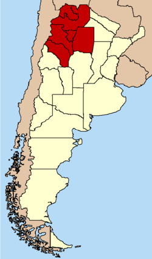
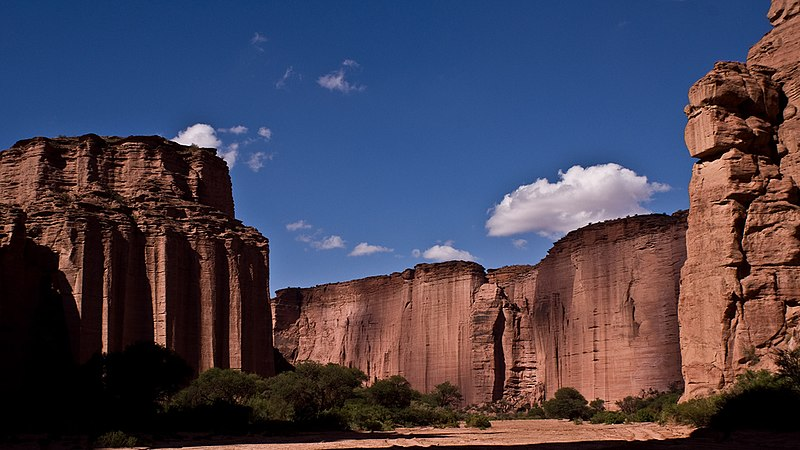
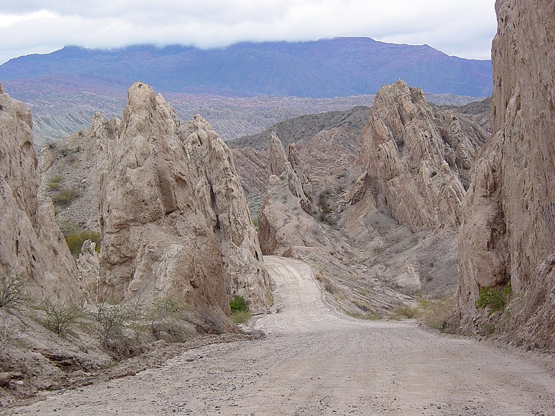
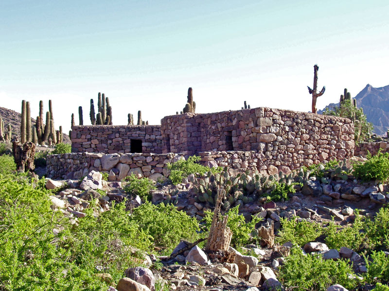

Noroeste argentino

El noroeste argentino (NOA) es una región histórico-geográfica de la Argentina, estando integrada por las provincias de: Jujuy, Salta, Tucumán, Catamarca, La Rioja y Santiago del Estero.
La región del NOA está fundamentada en consideraciones de índole histórico y geográficas, y se relaciona con la llamada Región del Noroeste Argentino desde 1999, una subdivisión de la Región del Norte Grande Argentino, por lo tanto, la circunscripción política del NOA.
Cordillera Oriental

La cordillera Oriental está formada por dos cordones montañosos paralelos (el occidental y el oriental), de formación paleozoica, posteriormente ascendida por el plegamiento andino, separados por quebradas y valles.
El cordón occidental presenta mayores alturas y su cerro nevado más alto es el Chañi, de 6200 m. El cordón oriental es de menor altura, y el Cerro Negro de Zucho alcanza los 4850 metros.
Las quebradas son las vías de comunicación de esta zona, de origen generalmente pluvial, son valles alargados y angostos. Las más importantes y pintorescas, son la Quebrada de Humahuaca que corre de sur a norte, la del Toro que asciende de sureste a noroeste poniendo así en comunicación los Valles Calchaquíes con la Puna de Atacama, la Quebrada de las Conchas, Quebrada de las Flechas y la de Santa María- Guachipas.
Quebrada de Las Flechas

La quebrada de Las Flechas, es un accidente geográfico (precisamente una quebrada) ubicado en el km 4380 de la Ruta Nacional 40 (tramo que une las localidades de Cafayate y Cachi) en el Departamento San Carlos de la provincia de Salta, norte de la República Argentina, extendiéndose por 20 km dentro de los Valles Calchaquíes, desde Angastaco hasta el Río Calchaquí. En 1995, la Legislatura de Salta lo incorporó como uno de sus símbolos.
Distante aproximadamente de 260 km de la ciudad de Salta (por Cafayate), se trata de formaciones rocosas puntiagudas inclinadas que forman estrechos desfiladeros con paredes de 20 m de altura, convirtiéndose en uno de los puntos turísticos y más atractivos de la ruta nacional 40.
Pucará de Tilcara

El Pucará de Tilcara es un sitio arqueológico formado por numerosas construcciones realizadas por los indígenas tilcaras, una parcialidad de los omaguacas, en un punto estratégico sobre la Quebrada de Humahuaca, en la Provincia de Jujuy, República Argentina.
Se encuentra a 1 km al sur de la ciudad de Tilcara, sobre un morro de 80 metros de altura, junto a la confluencia del Río Huasamayo y el Río Grande,1 que allí corre a 2450 msnm. Fue un lugar ideal para defenderse de los ataques, ya que dominaba el cruce de los dos únicos caminos del lugar. Por un lado, la defienden los acantilados sobre el Río Grande y por el otro, las ásperas laderas. En los faldeos más accesibles construyeron altas murallas. Los pucarás no solo tenían fines defensivos sino también sociales y religiosos. Desde esa altura podían controlarse los campos de cultivo circundantes y las viviendas de los campesinos en los terrenos bajos.